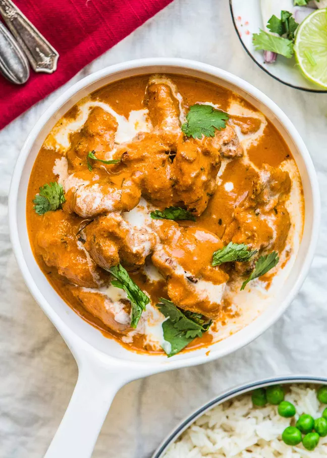

Butter Chicken recipe

What is butter chicken all about?
Butter chicken is prepared with marinated chicken that's first grilled and then served in a rich gravy (a.k.a.
curry) made with tomato, butter,
and a special spice blend as a base.
Unlike most Indian curries where the preparation of the base starts with a blend of onion and a ginger garlic
paste cooked in oil, butter chicken
uses tomato as a base and is cooked in butter, giving it a slightly sweet flavor. Cashews and almonds add to the
sweetness and richness of the dish.
Ingredients
For the chicken and marinade:
- 1 pound boneless, skinless chicken thighs, cut into roughly 1-inch cubes
- 1/4 cup full-fat plain yogurt
- 1 tablespoon olive oil
- 1 tablespoon ginger garlic paste
- 1 teaspoon ground coriander seed
- 1 teaspoon Kashmiri Lal Mirch
- 1 teaspoon cumin
- Salt to taste
For the sauce:
- 8 to 10 whole almonds
- 8 to 10 whole cashews
- 2 tablespoons unsalted butter, divided
- 1 tablespoon ginger garlic paste
- 1 teaspoon sugar
- 1 (15-ounce) can diced tomatoes
- 2 tablespoons dried coriander seed
- 1 1/2 teaspoons ground garam masala
- 1/2 teaspoon ground Kashmiri Lal Mirch
- 1/2 teaspoon salt
- 1 cup water
- 1/4 cup heavy cream
- 1/2 tablespoon Kasuri Methi
Method
- Bring the chicken and the rest of the marinade ingredients together in a large bowl. Using your hands,
massage the marinade into the chicken.
Cover with plastic wrap and refrigerate for at least 1 hour, or up to overnight.
- Soak cashews and almonds in water for at least an hour to (or up to overnight) before preparing the rest of
the recipe
- Heat a skillet or grill pan over medium-high heat. Drizzle a teaspoon of oil to the pan.
- Working in batches, remove chicken from the marinade and grill them on the pan for 3 to 5 minutes on each
side, until the chicken is cooked through
(clear juice runs out of it when you cut into it). Do not crowd the pan. Once cooked, transfer the chicken
into a separate dish.
Cover and set aside for later.
- Melt 1 1/2 tablespoons of the butter in a medium sized Dutch oven or a skillet on medium low heat. As soon
as the butter melts, add the ginger garlic paste followed by sugar. Sauté for 1 to 2 minutes.
Stir in the tomato and cook for 8 to 10 minutes on medium high heat, until all the extra liquid is cooked
off. The sauce should be a loose, paste-like consistency.
Add coriander, garam masala, Kashmiri Lal Mirch, and salt. Stir and cook on medium heat for 2 to 3 minutes.
Turn off the heat.
- Transfer the paste to a blender or the bowl of a food processor. Add the soaked cashews and almonds. Blend
into a smooth paste.
- Return the paste to the cooking pan over medium heat. Add the water to the paste and stir to make a smooth
sauce.
As the sauce begins to boil, add the grilled chicken and heavy cream. Stir well. Cover the pan and simmer
for 5 minutes.
If you thought this was great, how about checking out the others...
Home